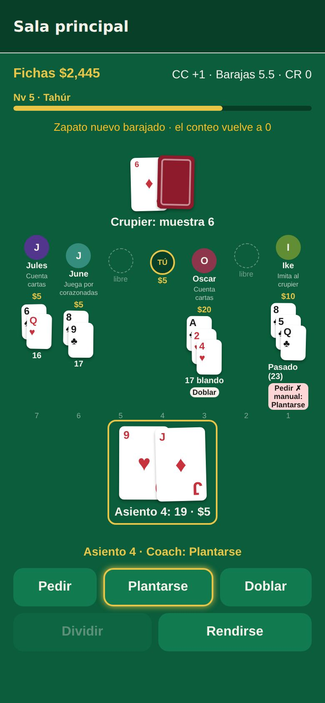
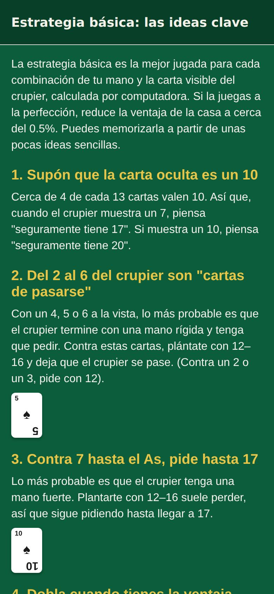
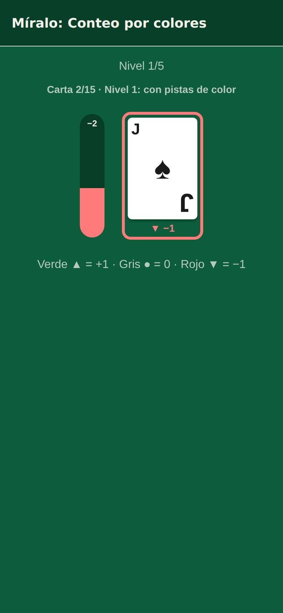
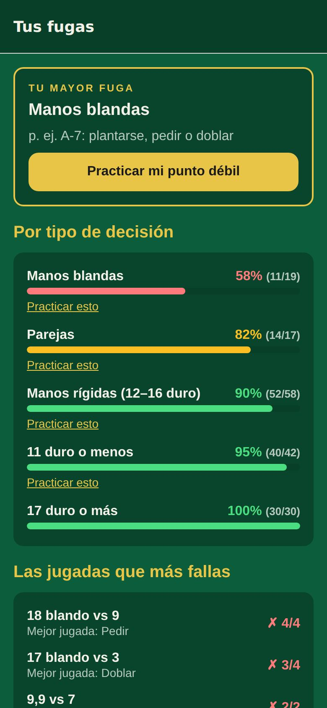

Aprende blackjack.
Luego aprende a contar cartas.
Un coach se sienta a tu lado en una mesa de casino realista, te señala la jugada correcta y te explica cada error con palabras sencillas. Cuando estés listo, cinco formas distintas te enseñan el conteo Hi-Lo.
Muy pronto en App Store y Google Play. Gratis, solo fichas de juego.

De tu primera mano a contar cartas
Hecho para quienes nunca han jugado y para quienes quieren dejar de adivinar.
Aprende el juego
Una primera mano guiada y luego diez lecciones cortas, de las reglas a la estrategia básica, cada una con un cuestionario.
Juega con un coach
Siéntate en una mesa de siete asientos donde los jugadores llegan y se van. El coach resalta la mejor jugada y te explica lo que fallaste.
Cuenta cartas
Aprende el conteo Hi-Lo viéndolo, escuchándolo, tocándolo, agrupándolo o leyéndolo, y úsalo para decidir cuánto apostar.



Todo lo que trae la app
Sin registro. Tu progreso se queda en tu dispositivo.
- Un coach en cada decisiónPistas antes de jugar y explicaciones claras después de un error.
- Una mesa de casino con vidaJugadores con su propio estilo se sientan, juegan y se van. Juega una mano o dos.
- Academia de conteoCinco formas de aprender el conteo, un entrenamiento diario y repaso espaciado.
- Tus fugasDescubre qué decisiones fallas y practica justo esas.
- Fichas y mesas por desbloquearEmpieza con 1,000 fichas de juego y llega hasta el Salón privado.
- Ejercicios y tabla de estrategiaEjercicios de estrategia básica, conteo continuo y conteo real; una tabla para tus reglas.
- Español e inglésIncluidas las lecciones, el coach y el conteo en voz alta.
- AccesibleModo daltónico, símbolos en cada valor del conteo y etiquetas para lectores de pantalla.
Preguntas
¿Esto es apostar?
No. Blackjack Coach usa solo fichas de juego. Las fichas no se pueden comprar, cobrar ni cambiar por nada. Es una herramienta de práctica para entretenerte y aprender.
¿Contar cartas es legal?
Contar cartas mentalmente es legal, pero los casinos son negocios privados y pueden pedirle a quien sospechen que cuenta cartas que deje de jugar blackjack o que se retire.
¿Cuesta algo?
La app es gratis con anuncios. Una compra única opcional quita los anuncios. La versión de navegador no tiene anuncios.
¿Necesito una cuenta?
No. No hay registro, y tus fichas y tu progreso se guardan solo en tu dispositivo (o en tu navegador).
¿Qué reglas usa?
Por defecto, seis barajas, el crupier se planta con 17 blando, se puede doblar tras dividir y rendirse, y el blackjack paga 3:2. Puedes cambiar las barajas, el 17 blando, doblar tras dividir, la rendición y el pago en Ajustes; el coach y la tabla siguen tus reglas.